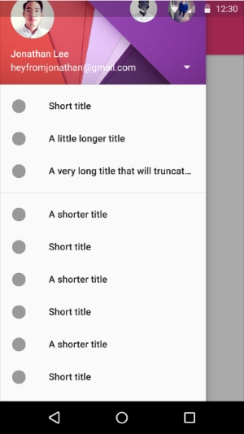

На ежегодной конференции Google I/O 2014 компания Google предоставила новую концепцию дизайна, которая была названа MaterialDesign. Концепция «материального» дизайна была полностью реализована в новой версии Android Lillipop. На мой взгляд, уже на этом этапе возникает несколько важных вопросов, а именно:
1) Что такое Material Design?
2) Где и как его использовать?
3) И почему мы должны изучать подобные вещи?
Ответив на эти вопросы, мы сможем хорошо представлять себе основы Material Design.
Итак, что же такое Material Design? Разумеется, это нечто большее, чем просто советы о том, как компоновать элементы пользовательского интерфейса или рисовать изображения. Material Design - это сложная система, которая всесторонне описывает, как создавать удобный и приятный дизайн, единый для всех устройств и платформ. Можно сказать, что Material Design это целая философия.
Такое название этой концепции дано не случайно. В Material Design используются «натуральные» материалы, например, бумага или чернила. Material Design отражает реальность нашего мира, и все происходящие в нем события укладываются в законы физики и логики.
Естественно, основной платформой для Material Design стала система Android. И кроме этого, «материальный» дизайн очень часто используется в веб-разработке.
Эта статья посвящена Android-разработке, а не дизайну, поэтому может показаться странным, что мы рассматриваем эту тему. Но ответ заключается в том, что философия Material Design столь всеобъемлюща, что любой разработчик должен иметь хорошее представление о ней, чтобы создавать профессиональные и удобные в использовании приложения. Поэтому сейчас нам нужно понять основные принципы Material Design, а также то, какие средства у нас есть для создания «материальных» приложений.
Во-первых, в Android SDK 21, а также в различных библиотеках поддержки довольно большая коллекция новых виджетов, которые позволяют создать сложный и дружелюбный пользовательский интерфейс с учетом правил Material Design. Эта часть весьма важна, поэтому мы в деталях рассмотрим ее ниже.
Material Design согласуется с законами реального мира. А наш мир трехмерный, в то время как все графические компоненты Android являются двумерными. Новая версия Android исправляет этот недостаток с помощью новых атрибутов, которые доступны всем элементам. Важно понимать, что сами объекты не становятся трехмерными, это сказалось бы негативно на интерфейсе пользователя, а лишь создают такое ощущение. Это достигается с помощью теней на заднем фоне элемента. Во-первых, элемент нужно приподнять, то есть сдвинуть по оси Z. Для этого служит атрибут elevation. И во-вторых, на заднем фоне создается тень, это делается с помощью стандартных фигур, которые определяются в xml-файлах. Пример:
<TextView
<!--other attributes -->
android:elevation="3dp"
android:background="@drawable/shadow" />
res/drawable/shadow.xml:
<shape xmlns:android="http://schemas.android.com/apk/res/android" android:shape="rectangle"> <solid android:color="#42000000" /> <corners android:radius="3dp" /> </shape>
Следующей частью Material Design являются цвета. И здесь уже строго определены некоторые правила. Во-первых, вы должны выбрать главный цвет в своем приложении (primary color) и использовать не более 3 его оттенков. Во-вторых, вы можете выбрать еще один дополнительный цвет (accent color), который будет использоваться в качестве фона для различных управляющих элементов: кнопок, переключателей и так далее. Это два основных требования, более подробную спецификацию вы всегда можете посмотреть в руководстве по Material Design от Google.
Вероятно, наиболее важной частью Material Design являются анимации. Здесь опять работает принцип «материальности», то есть соответствия анимаций реальных законам физики. Что это значит: все объекты в нашем мире имеют массу и не могут резко сдвигаться с места или тормозить. Все анимации должны быть плавными и натуральными. При этом надо учитывать, что объекты разного размера ведут себя по-разному, например, более легкие могут быстрее изменять свою скорость и т.п.
Еще один принципиальный момент – взаимодействие с пользователем. Анимации являются лучшей возможностью сообщить пользователю дополнительную информацию и поблагодарить его за работу с приложением. Разумеется, это образное выражение. Суть заключается в том, что когда пользователь взаимодействует с приложением, и при каждом его действии происходят красивые и продуманные вещи, он чувствует удовлетворение и желания продолжать работу.
При этом надо понимать, что нельзя создавать анимации только ради их наличия. Каждая анимация должна иметь смысл и быть логичной, так как только такие анимации могут улучшить опыт взаимодействия пользователя и приложения.
Все такие детали должны быть очень хорошо проработаны, ведь только тогда они смогут образовать единую систему, которая будет привлекать все больше и больше пользователей красивым и продуманным дизайном.
Перед тем, как перейти к практическому применению всех этих вещей, мне хотелось бы вскользь упомянуть об одном очень популярном виджете – Floating Action Button. Это новая концепция для вида кнопки, по нажатию на которую выполняется некоторое важное для текущего экрана действие. Обычно она позиционируется как возвышающийся объект и находится обычно в правом нижнем углу. Чаще всего это кнопка служит либо для создания чего-то нового (написать новое письмо, создать новое событие и т.д.), либо играет роль переключателя (присоединится к событию). Иногда она прикрепляется к списку. При этом, когда список прокручивается, кнопка пропадает вниз, и когда останавливается, она возвращается.
Несмотря на то, что это весьма популярный виджет, Google не включает его в стандартный набор средств SDK. Однако существует большое число реализации данного виджета от разных разработчиков, и вам нужно лишь найти подходящий вариант или создать его самому.
Я подчеркну, что я не ставлю себе целью рассказать вам все о Material Design, для этого существует спецификация, в которой вы можете найти более подробную информацию. Моей целью было только познакомить вас с общими принципами Material Design, чтобы можно было перейти к рассмотрению практического приложения.
Мы разобрали философию Material Design в общем, но это пока не сильно помогает нам при разработке приложений. Пора исправить эту ситуацию и перейти к практике.
Понятно, что в ближайшее время лишь малая часть Android-устройств будет работать под управлением версии Android 5.0 и выше. Поэтому, для того, чтобы создать хороший интерфейс в соответствии с Material Design, необходимо использовать библиотеки поддержки, главной из которых является appcompat library. Эта библиотека позволяет, во-первых, легко использовать единый стиль для всех компонент приложения и делает все виджеты «более материальными», и во-вторых, улучшает ActionBar.
dependencies {
compile 'com.android.support:appcompat-v7:21.0.+'
}
Последние версии Android Studio автоматически добавляют эту библиотеку при создании проекта.
Следующий шаг – определить стили, которое будет использовать наше приложение. Мы уже говорили, что стандартный ActionBar необходимо заменить на более гибкий Toolbar. Для примера создадим основной стиль приложения. Во-первых, нужно определить цветовую палитру приложения, то есть выбрать цвета colorPrimary, colorPrimaryDark и colorAccent. Создадим файл colors.xml:
<resources> <color name="color_primary"><!-- your color here --></color> <color name="color_primary_dark"><!-- your color here --></color> <color name="color_accent"><!-- your color here --></color> </resources>